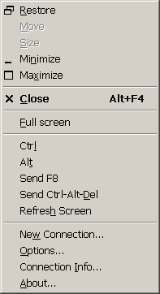

|

The F8 Menu provides the same set of available functions as the VNC Viewer window's normal System Menu, namely those allowing the window to be minimized, maximized, moved or closed.
Additionally, some VNC-specific actions are available:
Full screen
The Full screen menu item allows full-screen mode to be toggled on or off directly, without having to use the Options dialog. See the description of the Full screen setting in the Options page for more information.
Ctrl & Alt
Certain combinations of keys pressed with Ctrl and/or Alt are intercepted locally by Windows, preventing them from being passed to the server by VNC Viewer. The Ctrl and Alt menu options allow the Ctrl and Alt keys to be pressed or released at the server, regardless of the state of the VNC Viewer's local keyboard. If an item is ticked then the key is down (pressed), otherwise it is up (released).
Send F8
Because by default the F8 key is used to access the F8 menu, it will not be sent to the VNC Server when it is pressed. To send an F8 keypress to the server, you can bring up the F8 Menu locally and select the Send F8 menu option. If a menu key other than F8 has been selected then this menu item will behave accordingly.
Send Ctrl-Alt-Del
The Ctrl-Alt-Del key sequence is intercepted by the operating system for use as a Secure Access Sequence and so cannot be captured by the VNC Viewer for transmission to a remote server. Instead, you can bring up the F8 Menu and select Send Ctrl-Alt-Del to achieve the same effect.
Note that on some versions of the operating system, pressing Alt Gr-Del will cause the Ctrl-Alt-Del sequence to be captured by VNC Viewer without the operating system intercepting it. This is available primarily on European versions of the operating system.
Note that on all versions tested, pressing Shift-Ctrl-Alt-Del could be used to cause Ctrl-Alt-Del to be received by a WinVNC Server without having the local operating system capture the it.
Refresh Screen
The Refresh Screen option causes VNC Viewer to request a fresh copy of the current state of the entire server desktop. This is useful with VNC Servers that use imperfect update hooking schemes.
New Connection...
The New Connection... option causes a new Connection Details dialog to be displayed, so that a connection can easily be made to another VNC Server.
Note that a VNC Viewer started in this way actually shares the same process as the VNC Viewer window from which it was started. The VNC Viewer process will not quit until both windows have been closed. This may affect the behaviour of scripts which launch VNC Viewer.
Options...
This causes the Connection Options dialog to be displayed, allowing the settings for the current connection to be modified. See the description of VNC Viewer Options for more details.
Connection Info...
The Connection Info dialog displays information about the remote host, pixel format, line-speed estimate and protocol version. If you don't know what any of this means then don't worry - it's all safe to ignore! The main use of the Connection Info dialog is to help in diagnosing any problems you might encounter while using VNC Viewer.
|